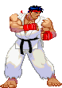
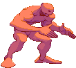
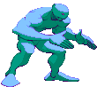

Street Fighter III: 3rd Strike é a última revisão na série Street Fighter III, que além de trazer um conjunto extenso de mudanças e rebalanceamentos, introduz cinco novos personagens ao elenco da série: Twelve, Remy, Q, Makoto, e Chun-Li.
Muitos no circuito competitivo de Street Fighter consideram 3rd Strike como o melhor jogo de luta de todos os tempos por seus gráficos, complexidade, e sistema de parries.
Versões de 3rd Strike podem ser encontradas para o Dreamcast, Playstation 2 e Xbox. A mais popular versão do jogo, porém, é indubitavelmente o Street Fighter III: 3rd Strike - Online Edition, lançada para o Playstation 3 e o Xbox 360, pela possibilidade de netplay.
Emuladores com netplay como o FightCade também existem, sendo utilizados com frequência por jogadores sem acesso aos consoles.



Por que jogar de Ryu? Porque Ryu is strong! Como um dos raríssimos personagens de 3rd Strike com três super arts consideradas perfeitamente viáveis no cenário competitivo, Ryu é representado neste jogo por um estilo de combate versátil, que muda radicalmente de acordo com o super escolhido.
Ryu, porém, brilha realmente é com seu potencial massivo de dano por punição, com alguns dos melhores e mais danosos combos sem super do jogo, capazes de aniquilar a barra de vida do inimigo ao mais singelo sinal de erro.
Fora um de seus supers podendo torná-lo um personagem muito complexo para jogadores principiantes, Ryu é um personagem relativamente acessível, com alguns obstáculos sendo a execução para seu kara-throw (elemento importantíssimo), e a aplicação de um de seus specials mais importantes, o Joudan Sokutou Geri, em combos.

Ken Masters provavelmente nunca esteve melhor em nenhum outro jogo da franquia Street Figher do que aqui em 3rd Strike, onde ele é considerado um dos melhores personagens disponíveis de todo o elenco, em grande parte por ser detentor de um dos arsenais mais completos e abrangentes de todo o jogo: com boa capacidade de dano em seus combos básicos, com ou sem barra, além de facilmente confirmáveis, ótima velocidade, com normais e specials perigorsamente rápidos, múltiplos excelentes reversals, extraordinária mobilidade, tano no chão quanto pelo ar, e é claro, um dos melhores supers do jogo, incontestavelmente, em seu Shippu Jinrai Kyaku, com a capacidade de estocar até três supers de uma só vez, um número absurdo de hit-confirms, e start-up veloz feito relâmpago.
Como a verdadeira definição viva do "pau para toda obra", Ken pode ser recomendado tanto para principiantes quanto para os experts: seus recursos mais avançados sendo menos necessidades fundamentais, e mais complementos eficázes para um jogo geral basico definitivamente sólido por si só. Então se você quer um personagem que não te faça sentir limitado em absolutamente nenhum departamento, considere-se na página certa.
Chun-Li retorna ao terceiro torneio World Warrior, embora um pouco diferente estilisticamente, tanto em sua aparência quanto em seu estilo de luta. Ela ainda é tão rápida e ágil, mas suas ações são mais fluidas. Não mais lutando por vingança, mas pela proteção dos outros, ela parece mais confiante em sua habilidade de luta também.
Em sua encarnação mais notória, Chun-Li é uma fera defensiva. Ela é conhecida por sua presença neutra avassaladora, ostentando botões absurdamente fortes para controlar o espaço de inúmeras maneiras. Baixos de longo alcance como 2MK, botões pesados de longo alcance como 5HP e botões de prioridade absurdamente alta como 4HP permitem que Chun mantenha o ritmo independentemente do estado do jogo. Seus jabs também são absurdamente rápidos, ou seja, seu 2 LP de 2 quadros, dando a ela uma opção defensiva rápida para confiar. No ataque, ela é conhecida por seu incrível strike/throw, complementado por resets de pressão como 6MK e seu incrível 5MK kara throw, que adiciona uma quantidade incrível de alcance ao seu já forte arremesso.
Provavelmente a ferramenta mais poderosa de Chun-Li é seu SAII, Houyoku-Sen. É um super rush incrivelmente rápido que acerta 17 vezes no total para dano massivo, combos de todos os seus pokes em todos os alcances, e pode ser cancelado por superjump para malabarismos de acompanhamento que levam a mixups chocantemente fortes. Ele tem alguma invulnerabilidade, permitindo que ele derrote bolas de fogo e pokes com quadros ativos baixos, e vem com uma quantidade saudável de dano de chip para selar rodadas com um parry difícil. Notavelmente, ele estoca 2 barras, permitindo que Chun use seus movimentos EX mais. O fato mais notável sobre estocar 2 barras é o medo que um estoque coloca no oponente geralmente permite que você construa a segunda barra com mais segurança, e a maioria dos personagens morrerá após dois usos de SAII.
Chun-Li é uma personagem solidamente top 1, sem confrontos perdedores e poucas fraquezas reais. Você terá que aprender a jogar corretamente de forma neutra, já que sua baixa saúde e falta de antiaéreos fortes significam que algumas decisões ruins encerram a rodada, mas realisticamente ela é bem simples, divertida e incrivelmente recompensadora de jogar.

Akuma (conhecido como Gouki no Japão) é um guerreiro extremamente poderoso obcecado com o domínio do Satsui no Hado, uma força baseada em energia escura, a antítese do Kyosui no Hado (Poder do Nada) que Ryu emprega. Ele acredita que somente outro praticante do Satsui no Hado será capaz de contestar seu poder. Sua primeira aparição foi em Super Street Fighter II Turbo como um chefe secreto.
Ao jogar com Akuma, o objetivo básico é usar sua habilidade de zoneamento para controlar as opções do seu oponente, minimizando o risco de ser atingido, ou simplesmente partir para o ataque total e dizimar o oponente o mais rápido possível, pois eles podem derrotá-lo quase tão rápido. É muito importante notar que Akuma tem a pior classificação de defesa absoluta de todos os personagens do jogo, e está empatado com Remy por ter a menor barra de atordoamento. Também deve-se notar que os supers de Akuma têm todos o mesmo comprimento, e que ele não tem movimentos EX. Tudo isso foi feito para contrabalançar seu incrível ataque e mixups.
Dudley é um boxeador cavalheiro inglês que despreza lutas sujas e busca oponentes que ofereçam uma luta boa e limpa. Ele nunca é visto sem suas amadas luvas de boxe azuis, mesmo enquanto dirige, toma chá e lê o jornal. Sua primeira aparição foi em Street Fighter III: New Generation.
Dudley é um personagem rushdown incrivelmente poderoso, ostentando algumas das melhores ofensivas e provavelmente os melhores mixups do jogo, com toneladas de dano para apoiá-lo. Ele tem uma sobrecarga irreativamente rápida em 6HK, que se conecta ao seu SAI e SAIII para knockdowns e dano, misturado com uma confirmação baixa em 2LK que leva ao mesmo. Tudo isso leva a mais ofensiva, que é facilmente sustentada com a variedade de normais plus e Target Combos de Dudley. Isso é ainda mais acentuado por Ducking (41236K) e Short Swing Blow (63214K), movimentos evasivos que permitem que Dudley desvie de ataques e puna.
Uma de suas características mais atraentes, no entanto, é sua produção de dano puro. Dudley tem malabarismos longos e chamativos de seu lançador 2HK e EX Machine Gun Blow (41236PP) que causam dano imenso. Embora sejam difíceis e específicos do personagem, eles permitem que Dudley transforme suas defesas em alguns dos maiores danos do jogo com loops Light Machine Gun Blow e seus infames loops de varredura 2HK.
No entanto, tudo isso vem com alguns problemas difíceis. O maior problema de Dudley é sua falta de um poke baixo forte. Muitos dos níveis superiores têm normais de 2MK que cancelam em especiais e supers, mantendo a segurança, mas Dudley não tem um desses ou uma resposta sólida para eles. Ele também é bem amplo, o que o deixa vulnerável a combos de alto dano e confirmações. Ele também luta para lidar com o rushdown sozinho, com 2LP sendo rápido, mas sem recompensa, e apenas EX Jet Upper (623PP) sendo invencível.
Dudley é um rushdown de alta execução e, embora dominar adequadamente seus combos e confirmações possa levar algum tempo no modo de treinamento, ele recompensa você com alguns dos melhores okizemes e ataques que o 3S tem a oferecer, além dos combos mais chamativos para flexibilizar a execução.
Elena é uma amante da natureza do Quênia. Ela emprega Capoeira, uma arte marcial que combina elementos de dança, acrobacia e música que combina com sua personalidade alegre. Ela aparece pela primeira vez em Street Fighter III: New Generation.
Elena é uma personagem de rushdown e poking de médio alcance especializada em EX Move Combos, seu plano de jogo principal é um keepaway footsie e um contra-ataque aéreo para ganhar estoque para um EX Moves ofensivo e um plano de rush substancial. Ela tem algumas animações muito complicadas que podem ser difíceis de acompanhar, permitindo que ela faça os oponentes tropeçarem com leituras incorretas que ela pode então explorar.
Makoto, uma adolescente japonesa moleca, busca restaurar o dojo de seu pai à sua antiga glória. Ela é uma das novas personagens introduzidas em SF III: 3rd Strike, baseada em um conceito mais tradicional de Karatê japonês em comparação ao Ansatsuken de Ryu/Ken, com sabor mais sobrenatural.
Makoto é a primeira Street Fighter feminina a ser forte e contundente com tanta resistência quanto os homens comuns (como Ryu e Ken), em vez de ser um arquétipo de "canhão de vidro". Embora sua velocidade normal de caminhada seja incrivelmente lenta, ela tem o avanço mais rápido do jogo, bem como fintas e overheads rápidos. Talvez sua melhor ferramenta seja o Karakusa, um agarrão de comando único que pode ser combinado, abrindo caminho para danos devastadores e atordoamento. Junte tudo isso e você tem um personagem que pode sobreviver a longos sets até que seu estilo de luta altamente explosivo possa vencer com uma única abertura.
Não se sabe muito sobre o ser misterioso conhecido como "Q". Ele foi relatado como estando em lugares completamente diferentes ao mesmo tempo com base em vários relatos de testemunhas oculares. Ele foi visto em todos os países ao redor do mundo. Alguns acreditam que ele pode estar ligado a vários desastres. Novato no SF Roster em 3rd Strike.
Talvez o mais popular dos níveis baixos, Q é um lutador de força bruta bastante simplista com bom poder, alcance e muitos normais úteis, mas ele também é bastante lento, o que significa que cada movimento deve ser deliberado. Além disso, ele tem o maior potencial de resistência no jogo se o jogador encontrar momentos seguros para provocar, tornando-o muito difícil de matar naquele ponto.

Remy é um jovem de Paris que emprega Savate (Boxe Francês) como seu estilo de luta. Ele tem desdém por todos os lutadores depois que seu pai abandonou Remy e sua irmã, que morreu devido à ausência do pai, para seguir o caminho do guerreiro. Remy é um novato em Street Fighter III: 3rd Strike .
Remy é um Zoner que foca em manter fora e uma quantidade surpreendente de pressão. A principal prioridade de Remy é levar seu oponente para o canto e fazer pressão 'Light Of Virtue', bem como colocar seu 'Cold Blue Kick' nos lugares corretos em sua pressão para ainda mais frames positivos e melhor ataque. Ele tem uma mobilidade bastante forte com seu avanço e recuo sendo muito fortes, bem como 'Cold Blue Kick' movendo-se muito para a frente e tendo uma quantidade segura de recuperação na maioria dos knockdowns. Ele tem uma infinidade de reversões também em 'EX Rising Rage Slash', bem como Super Arts, 'Supreme Rising Rage' e 'Blue Nocturne'.
Remy se destaca em situações ar-ar e antiaéreas com seu pulo feroz deixando seu oponente em um estado de malabarismo para acompanhamentos como 'Cold Blue Kick' ou mesmo 'Supreme Rising Rage' em alguns cenários. Onde Remy mais luta é em sua jogabilidade é em ter a menor barra de atordoamento do jogo, dificuldade em punir depois que ele apara, tendo seu zoneamento punido por aparas do oponente, pokes bastante medíocres e tendo vida muito baixa.
Necro, cujo nome verdadeiro é Illia, é um russo que foi geneticamente experimentado pela Sociedade Secreta, o que o deixou com a habilidade de esticar seus membros como borracha e criar correntes elétricas por todo o corpo. Ele aparece pela primeira vez em Street Fighter III: New Generation.
Necro é uma estranha fusão de Dhalsim e Blanka. Ele equipou alguns normais incrivelmente longos, combos de alto dano, bom jogo alto/baixo e a habilidade de construir atordoamento em taxas surpreendentes (com o uso de Electric Snake especialmente). Ele também tem divekicks para permitir que seu ataque comece quando bem espaçado. Seu salto é muito flutuante, o que pode ser estranho para se ajustar, e dá ao seu oponente mais tempo para reagir. Com seus botões de longo alcance, também vem a desvantagem de hurtboxes muito estendidos, então ele toma decisões inteligentes para evitar ser facilmente contra-atacado. Muitos de seus movimentos também são inseguros, então escolher suas opções com sabedoria é importante, especialmente devido à sua menor saúde. Seu estilo de jogo pouco ortodoxo é uma espada de dois gumes, exigindo que os jogadores utilizem um conjunto único de ferramentas para ter sucesso. Tomar a decisão certa pode ser imensamente recompensador, com seu dano, pressão de canto e produção de atordoamento (junto com grandes malabarismos de atordoamento no canto) permitindo que ele ganhe uma rodada em uma única situação.
Alex é o novo personagem principal brilhante de Street Fighter 3, e no estilo clássico de protagonista, ele foi projetado para ser fácil e divertido. Ao contrário do arquétipo shoto que a maioria dos protagonistas preenche, Alex desempenha mais o papel de um lutador/lutador de médio alcance. Ele tem alguns ótimos pokes, um dash decente, um forte comando de agarrar e muitos movimentos EX úteis. Seus combos são simples, mas podem potencialmente causar alto dano, especialmente quando o oponente está atordoado. Isso acontecerá com bastante frequência, pois Alex naturalmente acumula toneladas de atordoamento apenas com pokes e combos curtos. Algumas leituras fortes no oponente levarão a um atordoamento, o que leva a um combo HP Chop em grande dano. Adicione a ameaça desse dano aos vários movimentos EX de Alex que evitam ataques dos oponentes, como EX Elbow e EX Stomp, e ele está quase sempre a alguns palpites de vencer.
Apesar disso, Alex é conhecido como um nível baixo por um motivo, e vem com muitos problemas que se tornam mais perceptíveis conforme você melhora. Sua falta de opções de cancelamento o prejudica muito, já que apenas 5MP e cl.MK combinam com qualquer especial. Ele não pode cutucar um knockdown ou atrair um parry baixo para causar dano como os melhores personagens podem, mesmo com medidor. Isso significa que um parry de longo alcance frequentemente encontrará Alex se contentando com sweep, o que não lhe dá muita recompensa. Ele também não tem nenhum super bom, com todas as 3 de suas super artes tendo problemas perceptíveis que os impedem. A maioria dos jogadores de Alex usará SAII para a utilidade simples e alto EX, mas mesmo isso tem problemas. Muitas das melhores ferramentas de Alex também têm respostas simples, como red parry EX Elbow ou tap backwards vs EX Stomp, o que os torna muito mais arriscados contra oponentes que conhecem o confronto.
Acima de tudo, Alex é um personagem simples e divertido que executa golpes/arremessos recompensadores, empurrando o oponente para o canto e construindo atordoamento, até que ele acerta um combo de atordoamento HP Chop prejudicial e rouba a rodada. Ele força o oponente a adivinhar, e alguns palpites errados terminam a rodada. Ele definitivamente é o nível baixo que as pessoas dizem que ele é, mas felizmente ele também está no 3rd Strike, onde qualquer um pode vencer. Dedique tempo suficiente e você roubará até os melhores jogadores.


Hugo (ou Andore como era chamado em sua estreia inicial como um inimigo na série beat-em-up Final Fight) é um ex-membro da Mad Gear Gang. Sua antiga gangue agora caiu, Hugo está determinado a se tornar o lutador número um do mundo, com seu antigo membro da gangue e amigo de longa data Poison como seu empresário. Hugo foi introduzido pela primeira vez à série Street Fighter em Street Fighter III: 2nd Impact
Hugo é o grappler mais direto do 3rd Strike, mais do que Alex, e como tal, requer paciência excepcional para jogar. Ele pode causar uma quantidade impressionante de dano com apenas alguns movimentos (teoricamente capaz de nocautear Chun-Li com apenas 4 usos de seu principal comando grab, o Moonsault Press), mas sua velocidade de movimento lenta e falta de opções de punição à distância tornam sua vez especialmente difícil. Hugo também é o maior personagem do 3rd Strike, o que significa que ele tem um grande conjunto de hurtboxes, e combinado com seus pokes inseguros o torna um alvo fácil para muitas confirmações de acerto.
Ibuki é uma kunoichi que prefere viver sua vida como uma estudante do ensino médio. Ela aparece pela primeira vez em Street Fighter III: New Generation.
Apresentando uma incrível velocidade de caminhada e dados de quadro, Ibuki é uma potência de mixup que pode ser frustrante de se enfrentar. Sua habilidade de obter vantagem de quadro é surpreendente, e ela é frequentemente impune por grande parte do elenco. Uma vez que ela começa a atacar, pode ser um apagão para o oponente se ele não conseguir entender seus padrões. Outro aspecto notável é seu salto de longo alcance e muito rápido, que pode ser alterado usando sua Kunai para evitar tentativas antiaéreas e começar sua ofensiva.
Oro é um velho ancião que passou tanto tempo dominando artes marciais que isso o tornou imortal, ou algo assim. Ele luta com um braço amarrado para tornar suas lutas mais justas para seus oponentes.
Oro é um personagem altamente móvel com opções de movimento únicas e fortes pokes no chão. Ele quer usar seus pokes e mobilidade para manter distância e frustrar o oponente enquanto constrói medidor. Com medidor, Oro procura oportunidades para acertar MP próximo e ativar super para terminar a rodada.
Embora Oro geralmente não seja um personagem de execução muito alta, seu combo mais importante (o chicken loop) requer tempos diferentes contra muitos personagens.
Sean é um jovem e orgulhoso artista marcial amador do Brasil. Ele idolatra Ken, eventualmente se tornando aluno de Ken e buscando provar seu valor como lutador. Sean aparece pela primeira vez em Street Fighter III: New Generation.
Sean é talvez a definição mais eficiente de um personagem subestimado na história dos jogos de luta. Na 2ª versão de Street Fighter III, 2nd Impact, ele estava praticamente totalmente quebrado, causando toneladas de dano com suas longas sequências de combos. Em resposta a isso, a Capcom fez a coisa responsável e o tornou um personagem original, em oposição a um Ken preto em um gi amarelo.

Com Necro sendo seu protótipo, Twelve é geneticamente projetado para se regenerar, formar outras formas (geralmente armas) de seu corpo, copiar a aparência e habilidade de uma pessoa, e é destinado a ser incapaz de ser danificado. O "G-Project", o projeto secreto que resultou no nascimento de Twelve, foi executado pelo Dr. Kure, e supervisionado pelo irmão de Gill, Urien. Twelve é ordenado a resgatar Necro e Effie depois que este último libertou e ajudou Necro a escapar da organização de Gill. Twelve também está sendo produzido em massa pela organização para criar um exército de criaturas semelhantes a Twelve. Twelve considera Urien seu pai por causa de seu envolvimento com sua criação. Twelve é um recém-chegado ao Street Fighter III: 3rd Strike.
Não vale a pena negar o fato de que Twelve é horrível - ele está facilmente no segundo nível, ou talvez até mesmo o pior personagem do jogo. Ele carece de muitos campos importantes, e isso muda seu plano de jogo do que provavelmente era para ser um rushdown pesado de mixup para bater e correr, pesado em obter uma vantagem de vida com segurança e parar. No entanto, ao contrário do que se acredita, Twelve não é realmente inútil ou completamente inviável - seu airdash é uma ótima ferramenta para se aproximar, mixups e parar. Seu walk low profiles projéteis e permite que ele vá para anti aéreos com mais segurança. Suas agulhas EX podem ameaçar com uma oportunidade de knockdown e okizeme de longe, e ele realmente tem alguns normais decentes para poking, anti airing e blockstrings. Se você escolher Twelve, prepare-se para jogar com um dos personagens mais difíceis deste jogo. Se isso soa como sua ideia de um bom momento, no entanto, vale a pena experimentá-lo.


Yang é o irmão gêmeo mais novo de Yun. Yang é um patinador inline introvertido de Hong Kong. Ele é habilidoso em Kung Fu Chinês como seu irmão. Yang está ansioso para provar a si mesmo, mais sobre seu irmão do que qualquer outra pessoa, e pode ser condescendente e de boca afiada com seus oponentes. Ele aparece pela primeira vez em Street Fighter III: New Generation como uma troca de paleta de Yun, antes de ganhar um moveset único em SF III: 2nd Impact.
Yang tem o comando de agarrar e divekicks característico dos Twins, além de ter uma velocidade de caminhada rápida. Sua pressão é mais direta do que a de Yun, usando seus Rekkas para consolidar seu plano de jogo. Pode ser difícil encontrar uma abertura para a pressão de Yang, pois apenas o golpe final de seus rekkas é punível no bloqueio. Seu corner carry é extremamente potente e, com seu command dash, ele pode criar situações oki mesmo se ele derrubar seu oponente para longe. Ele não tem a capacidade de converter luzes sem medidor, ao contrário de seu irmão mais velho. Embora ele tenha algumas opções fortes de perto, de longe ele tem que se comprometer/arriscar mais devido a opções de longo alcance mais lentas e puníveis ou obter pouca recompensa por não conseguir converter.
Yun é um habilidoso artista marcial de Kung Fu Chinês. Vindo de Hong Kong, ele é um skatista otimista e o irmão gêmeo mais velho de Yang. Comparado ao seu irmão mais novo e convencido, Yun é muito mais brincalhão e tranquilo. Ele aparece pela primeira vez em Street Fighter III: New Generation.
Com o melhor super do jogo em seu currículo, Yun é uma força a ser reconhecida. Ele também apregoa algumas ferramentas de mobilidade potentes em um superjump rápido, divekicks variáveis, velocidade de caminhada rápida. Seu ataque é bem forte, dando a ele acesso a um jogo de mixup sólido de tempos variáveis para evitar defesas e um comando de agarrar que permite conversões depois. Suas capacidades de conversão também são notáveis, obtendo bons danos até mesmo de ataques leves. Mesmo sem Genei Jin ativar, ele ainda tem algumas ferramentas poderosas, mas com isso suas habilidades disparam e ele pode assumir o controle do jogo em um piscar de olhos.
Urien é o segundo membro mais forte da misteriosa Sociedade Secreta, superado apenas por seu próprio irmão Gill. Ele se ressente da supremacia de seu irmão mais velho e deseja derrubar Gill por qualquer meio. Urien foi introduzido pela primeira vez em Street Fighter III: 2nd Impact
Urien é um personagem que depende principalmente de setups, mixups básicos e movimentos normais. Seu plano de jogo fundamental é básico, e seus normais são comuns, mas a ameaça adicional do Aegis Reflector une todo o seu kit. Se você conseguir administrar sua economia de medidores e estiver disposto a aprender setups específicos do personagem e rotas de combo, você pode tornar a vida do seu oponente absolutamente miserável. Se um plano de jogo básico e sólido apoiado por uma opção nuclear parece ser o seu caso, Urien é o seu personagem.
Gill (ギル Giru) é o líder de uma misteriosa organização de culto chamada Secret Society, que tem manipulado eventos mundiais por mais de 2000 anos, e é dedicada à salvação da humanidade e à criação de uma nova utopia. Seu desejo é controlar o mundo (ou no caso de 3rd Strike, a lista de níveis de port de console), mas ele não é nem um vilão nem um herói. Gill foi introduzido pela primeira vez em Street Fighter III: New Generation.
Gill é um personagem chefe que pode ser melhor descrito como uma versão muito melhor de Urien (em termos de normais). Ambos têm sprites, hitboxes e hurtboxes semelhantes, mas os movimentos de Gill saem muito mais rápido e/ou causam mais dano e atordoamento. Ele tem uma cabeçada como Urien, mas não é um movimento de carga e, ao contrário de Urien, ele tem um Lariat. Ele também é indiscutivelmente o personagem mais forte do jogo, tanto na versão arcade quanto na versão para console, onde ele é ligeiramente melhorado (Pyrokenesis/Cryokenesis se torna super cancelável na versão para console). Gill é uma máquina de dano, quase sem movimentos ruins, e é capaz de obter um TOD de qualquer parte da tela em ambos os lados com um único HP agachado.